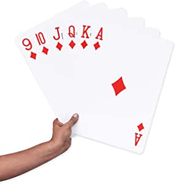

Metódo de Ordenamiento por Inserción
Entrando en contexto
Por ejemplo, hay 5 cartas cada una con una jerarquía al verlas ordenadas de manera aleatoria fácilmente seleccionamos la que se vea más pequeña y la enviamos a la última posición luego si encontramos en los 4 restantes el mínimo y este es menor a la primera selección pues la enviamos al fondo y avanza una posición la carta seleccionada inicialmente.
Función del método
Este algoritmo simula el comportamiento humano del juego en una partida de cartas hacer la escala desde donde ya la tenemos e insertar los valores que se correspondan.

Por tanto, el método Recorre el arreglo encontrando el menor para luego desplazarlo a la última posición inicialmente luego recorre los números restantes mientras encuentra el menor y lo envía directamente hacia atrás y avanza posición sobre posición. Recorre como el algoritmo burbuja, compara conservando las posiciones y el valor ya guardado.

Este gift es un claro ejemplo del funcionamiento del método por selección.
Una pasada es un recorrido de cada posición haciendo comparaciones.
Este arreglo hace mucho menos pasadas que los 2 anteriores, por eso se dice que
es el más eficiente. Aunque al respecto nos encontramos con definir unos ciclos más complejos.